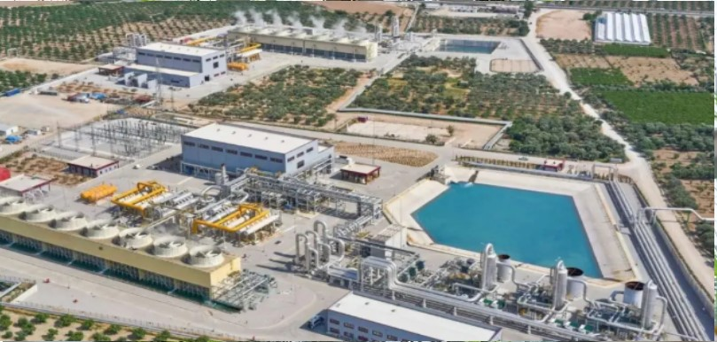
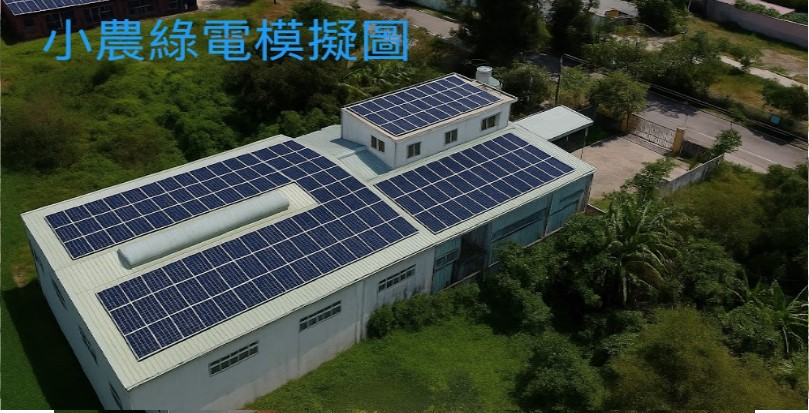

整合方案
針對不同環境與客戶需求，我們提供最真實的數據分析、科學說明，結合產官學研發能量與國際經驗，協助您規劃最適合的再生能源方案。

農地整合與光電共存
善用農地結構，結合地上型與溫室型太陽能，達成農電共生，兼顧生產與能源收益。

地熱評估與應用
結合地質探勘、溫度監測，規劃在地地熱開發，推動社區型、分散式綠能。

國際經驗輸出
透過與越南、東協合作，輸出台灣光電與微電網技術，協助海外能源轉型。
針對不同環境與客戶需求，我們提供最真實的數據分析、科學說明，結合產官學研發能量與國際經驗，協助您規劃最適合的再生能源方案。
善用農地結構，結合地上型與溫室型太陽能，達成農電共生，兼顧生產與能源收益。

結合地質探勘、溫度監測，規劃在地地熱開發，推動社區型、分散式綠能。

透過與越南、東協合作，輸出台灣光電與微電網技術，協助海外能源轉型。